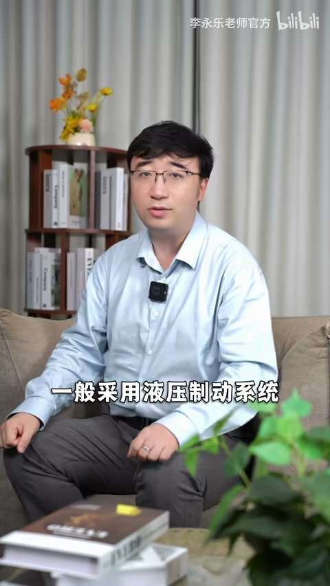
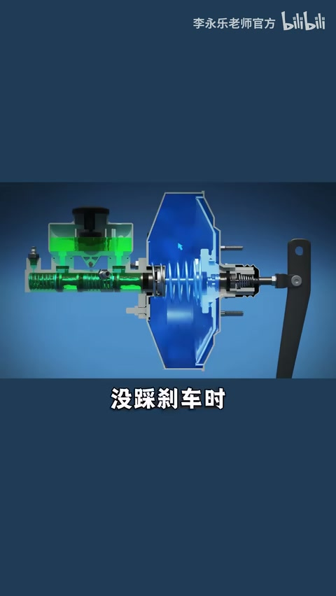
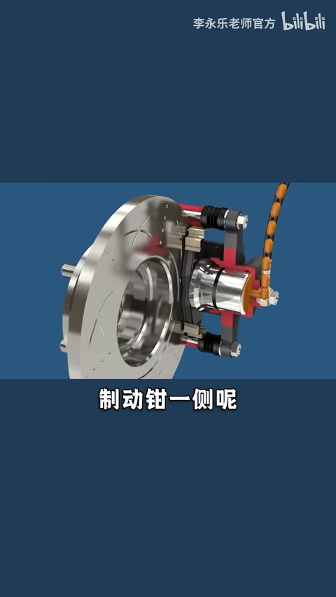
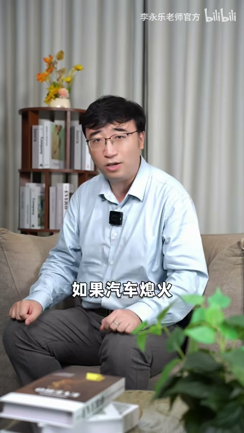
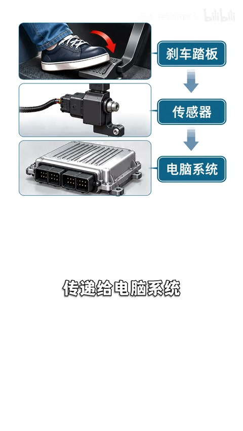
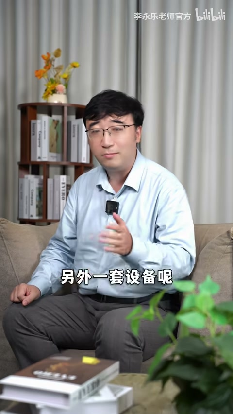
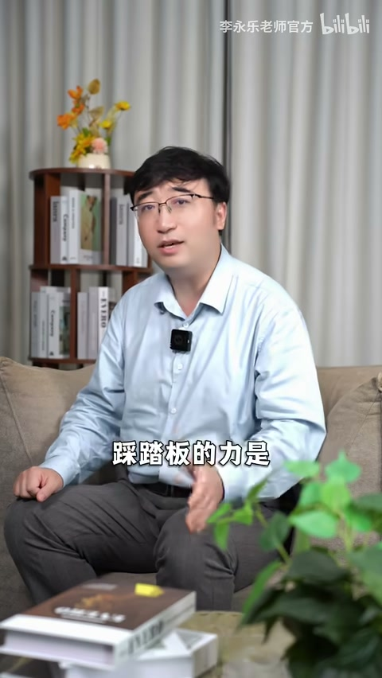
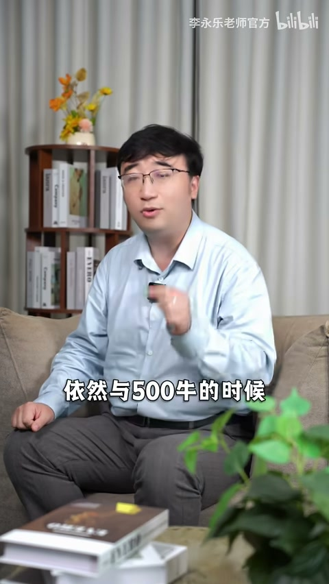

液压三级放大
踏板是杠杆；真空助力泵两侧压差帮你推；液压按帕斯卡原理在大面积轮缸再放大，刹车片夹盘或顶鼓，靠摩擦停车。

[00:08] 设问：轻轻一脚为何能按停几吨车？
Hook: how can a light pedal stop tons of car?

[00:30] 未踩时两侧真空；踩下后一侧通大气，压差帮你推连杆
Booster: both sides vacuum at rest; press opens atmosphere to multiply force.

[00:50] 活塞挤刹车油→轮缸大面积→力再放大 10–20 倍，夹住刹车盘
Fluid to larger caliper pistons: another 10–20× via Pascal’s principle.

[01:15] 例：3×5×10=150 倍；300 N 脚力可对应约 4.5 吨级制动效果
Example 3×5×10=150×; 300 N foot force ≈ 4.5-ton class effect.
熄火变沉与线控制动
发动机熄火真空没了，踏板变沉。线控：踏板与液压无直接机械连接，传感器读深浅，电脑驱电机推液压，可能量回收、省真空泵；仍要求电控冗余，双挂可回退纯机械液压。

[01:40] 线控：踏板变「游戏手柄」，采集意图后由电机执行
Brake-by-wire: pedal is a sensor; motors push hydraulics.

[02:20] 电控坏了有备份；再挂也须能回到纯机械液压——会很沉但仍能停
Redundancy required; last fallback is unboosted hydraulic—heavy but stops.
不是越用力越好
国标：获最大制动力所需脚力不超过约 500 N。传统车约 400–500 N 到顶；线控常 200–300 N 即触发最大。再踩到 1000 N 制动力也不再涨。

[02:50] 约 500 N 已近最大制动力；再狠踩收益为零
~500 N already maxes force; stomping harder adds nothing.

[03:15] 明白放大链 + 线控意图采集 + 脚力饱和，就懂刹车为啥「轻轻就够」
Know the gain chain, by-wire intent, and force saturation—light pedal makes sense.
小结
刹车是放大与饱和问题，不是蛮力比赛。